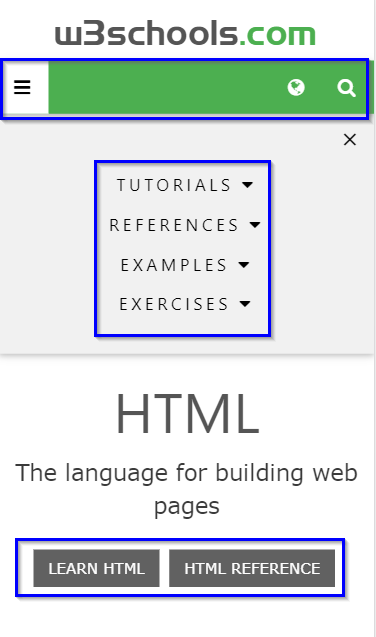
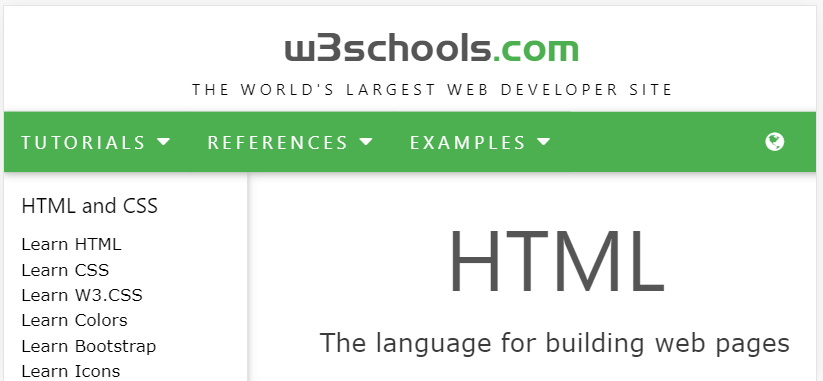
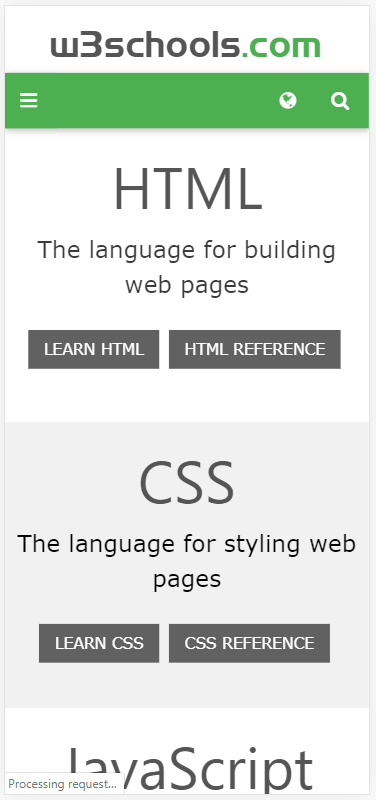
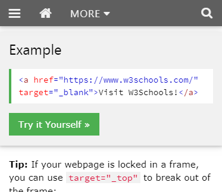
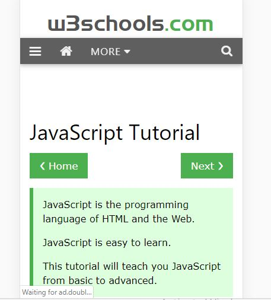

Design - Analysis Assessment
w3schools.com
Design Principles
Proximity — Garrett Bond

The principle of Proximity is defined as grouping similar elements close to e ach other so that navigation is easier for the user.
Example: In this image you can see that w3schools follow this principle for their overall layout on the front page. The principle can be seen within the menu icon, on the top navigation bar, and the buttons are even grouped together.
Alignment — Gary
 
The site is straight forward in its mobile, iPhone X, presentation. Site is vertically oriented for top to bottom display on the phone. It can be consumed horizontally but this does not seem comfortable and requires more scrolling action. There is no side to side scrolling required in the site.
All items on the vertical display are center justified in the display. On the horizontal display the information has two vertical columns. The left column is for a side navigational list and the right 75% of the display is primary site content. In the horizontal display some engagement boxes, green ones, are on the left side of the container, the gray engagement boxes are center aligned.
Scrolling is top to bottom in the vertical or horizontal site display. No side to side scrolling.
While content is easy to read it is difficult to interact with in some areas simply because you are trying to interact on a detailed working level, inputting information. The information input required on the site is not conducive to voice diction and the mobile keyboard for this work is painful.
The layout is well suited for consuming as a reader of the information. Any non-full-sized keyboard enabled device is not truly suited for the primary full site experience.
Repetition — Austin

The W3Schools web site has a repetition scheme in both the shaping of the containers and the color theme. By mere observation we can see the containers are mostly square and rectangular, even in their spacing. This makes it easier to navigate through options as well as form a pattern which help point in the right direction. Also, the green color used for boarders and buttons simplify what would have required thorough investigation to recognize. The same style is used for all the text; simple and formal, which is adequately suited for its instructional purpose.
This image clearly demonstrates the application of repetition in color scheme and font consistency to create emphasis.
Contrast — Gary

Is established via the use of the minimalistic color pattern. Branding color of green is used with contrasting plan white background. Test on the white field is always black. White text on all colored engagement boxes regardless box background color. All engagement boxes are same size and have white text. Green engagement boxes are used to access “Try it yourself” exercises and navigating through educational materials. Most, if not all, other engagement boxes are gray.
All of this works together to producing simplistic contrasting web site.
Typography — Franklin

W3schools does a great job of implementing the Typography principle into their overall design. In the following image you can see the various ways they have applied the design.
- Number of font family's used are kept at a minimum
- Length was moderate and not too long
- Site wasn't in all caps
- No blinking text
- Overall formatting of text was applied and demonstrated professionally
Site Purpose Statement
To provided interested persons a place to research learn practice, prove, and demonstrate an understanding of web building skills ranging from programming fundamentals to and including entry level skills in web coding and other web related tools such as HTML, CSS, Java Script and a variety of Server side tools.
Target Audience
- Age: 10-60
- Occupation/Skill level: Student, Hobbyist, and Developers"
- Income: 0-50,000
- Other: (Gender: Not Applicable, Social Enconomic Class: Lower to Middle)
Persona
- Name: Bob Smith
- Occupation: Student or New to tech Field
- Primary Device: PC or Internet device
- Quote: I am Bob and I want to learn web based languages and tools.